首启方案 C · 实际 SwiftUI 渲染
不是 HTML 模拟。面板由真实 SwiftUI/AppKit 绘制，使用生产 token 与共享控件：ClaudioT2Badge、ClaudioEventGlyph、MasterVolumeRow、MotionPreviewButton、PanelQuitFooter。尺寸 312×560pt，2× 位图。首启内容区是新组合，现有面板的最近事件 / 声音作用域 / 包选择区域未包含在这组截图里。
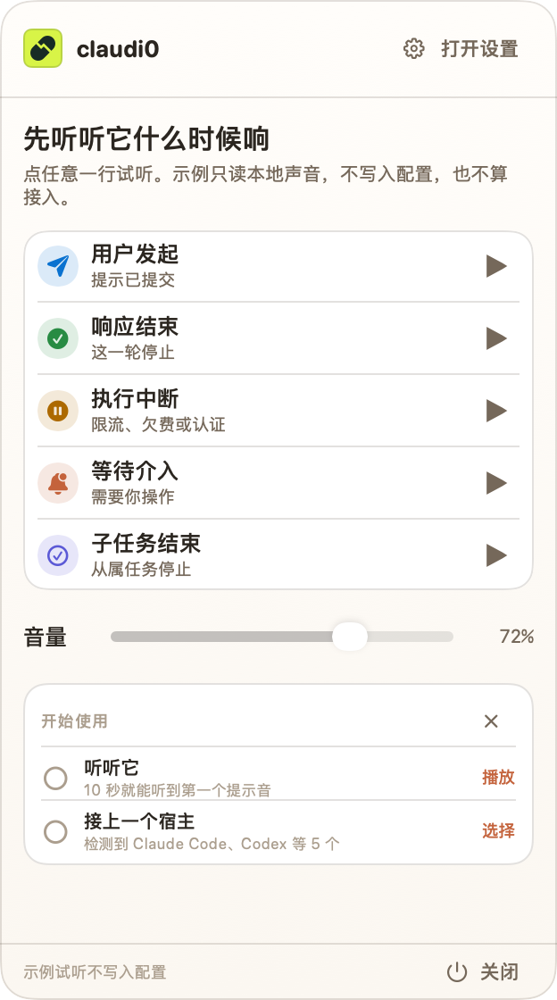
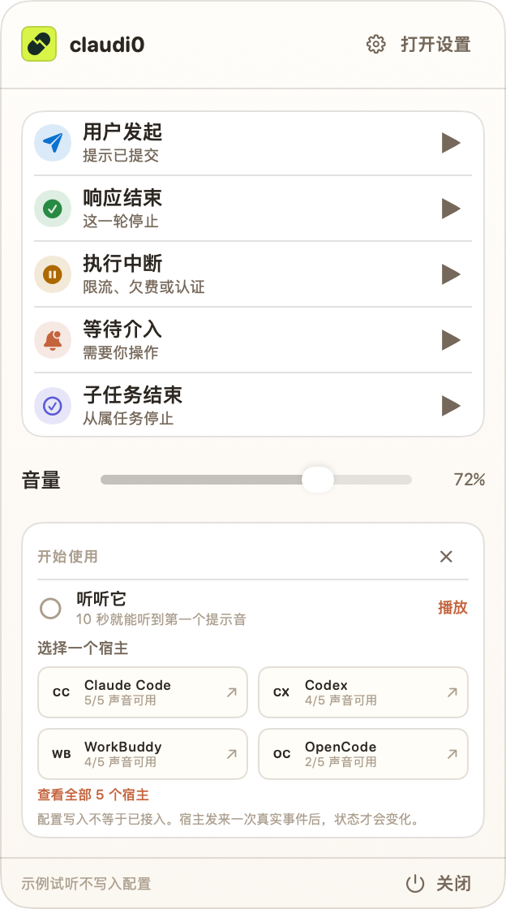
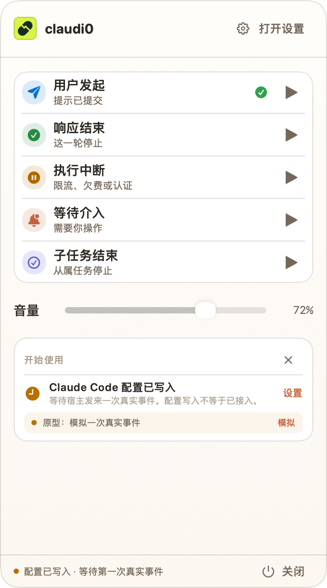
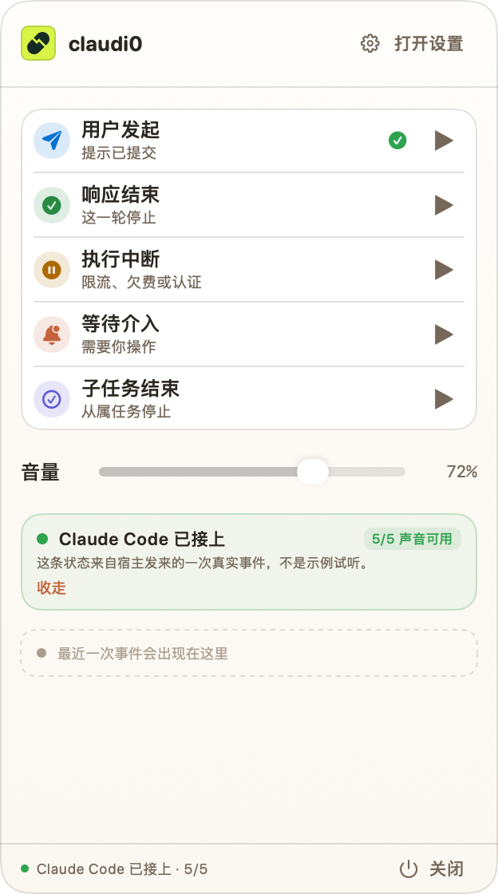
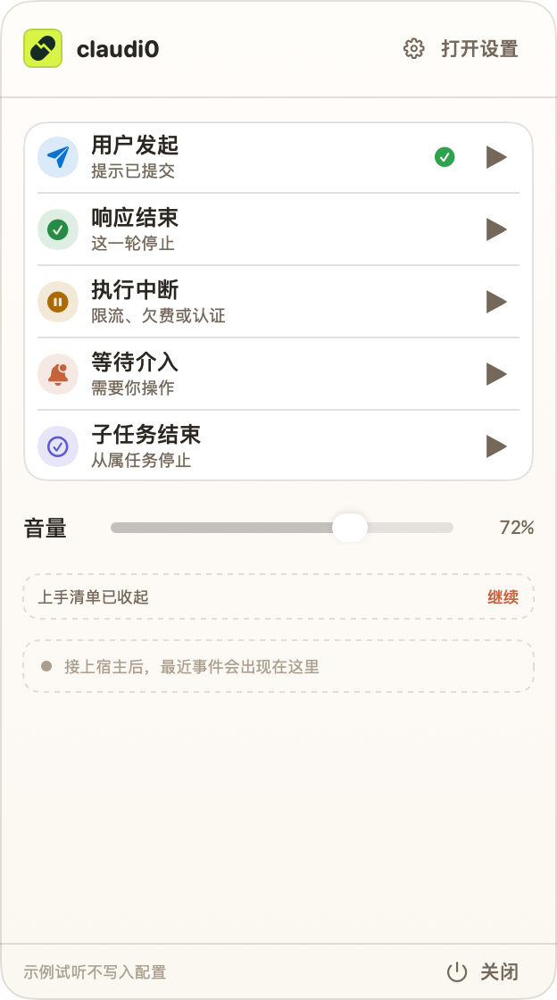
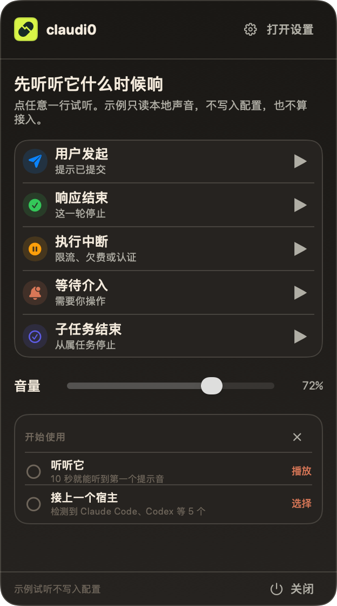
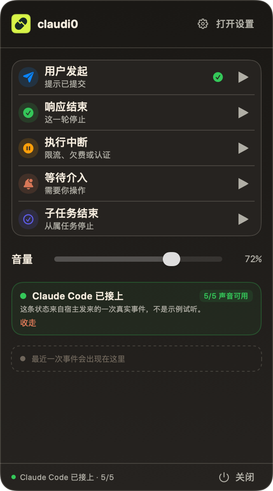
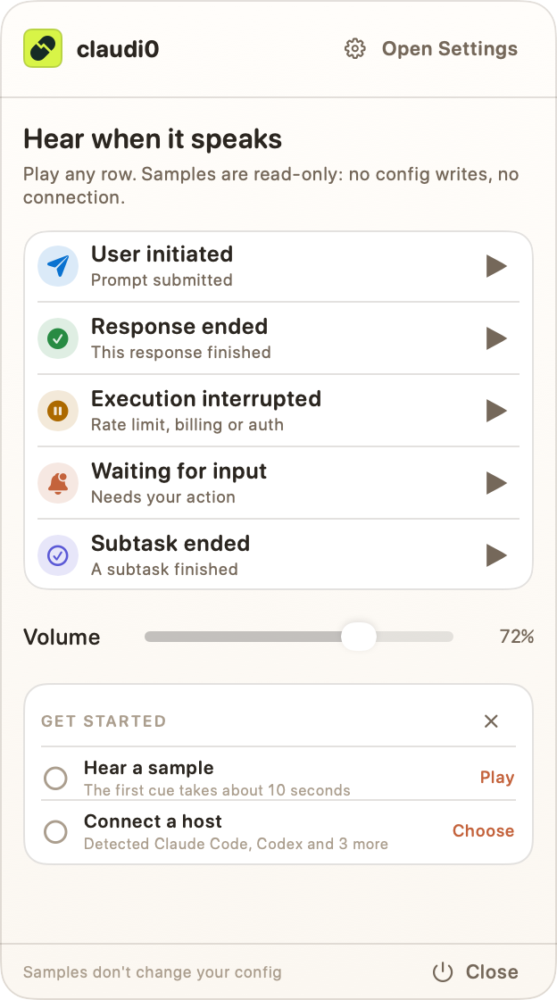
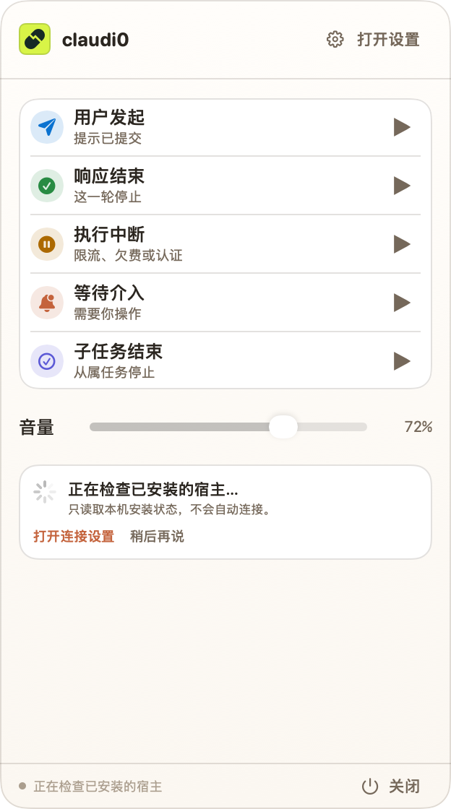
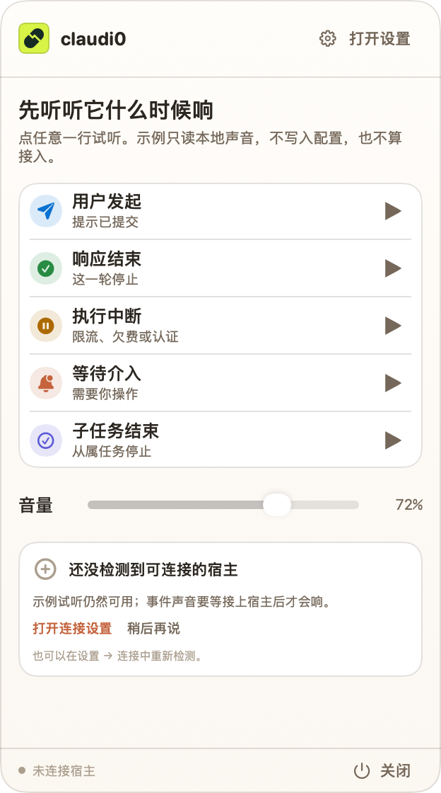
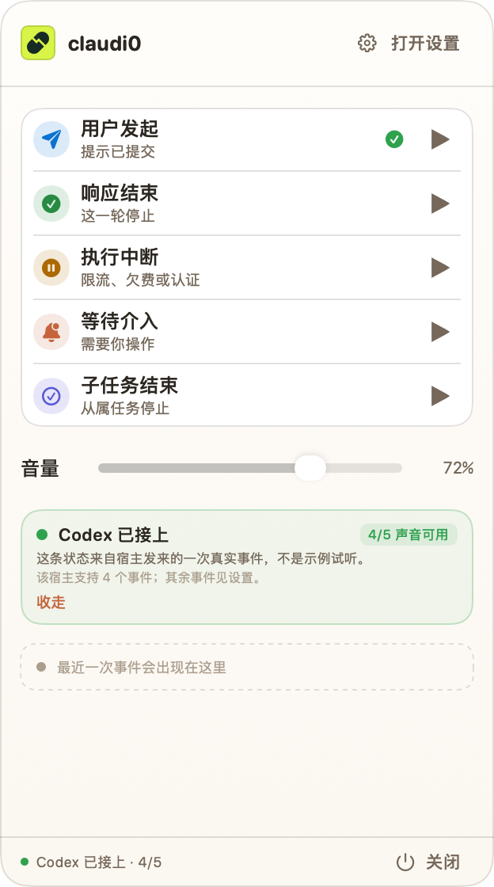
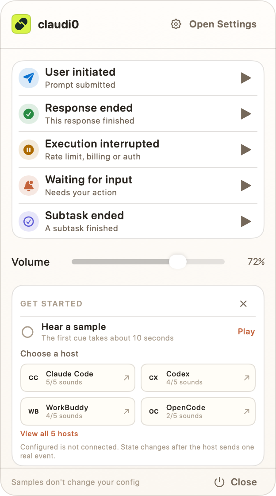
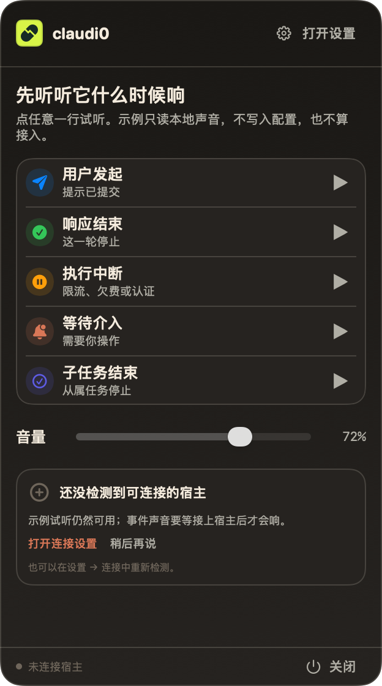
这版证明了什么
- 方案 C 可以在 312×560 的真实面板里成立，不需要额外窗口。
- 真实事件行、音量控件、footer 与品牌头可以直接复用。
- 面板只列已检测到的宿主，最多 4 个；完整目录留在设置「连接」页。
- 检测中、无宿主、等待真实事件、完成四种状态在原生排版下都能清楚区分。
- 覆盖率按宿主显示，不写死 5/5；Codex 的 4/5 会明确说明。
还不是生产实现
- 这是测试 harness 里的 DEBUG 原型，没有挂进
ClaudioGUI的面板树。 - 宿主列表与覆盖率是 fixture；正式实现必须从
HostIntegrationSnapshot/HostSourceRowPresentation生成。 - “播放”“模拟”“打开连接设置”只改视觉状态，不播音频、不写配置、不产生真实宿主事件，也不打开设置。
- 菜单栏指示 / 临时 Dock 的入口兜底不在这些面板截图内。